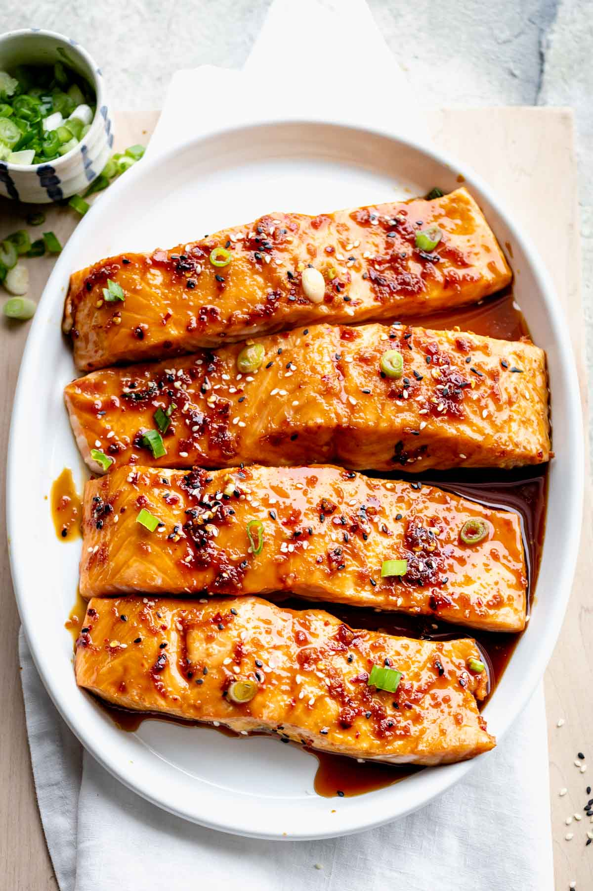

Maple Salmon
Home

Delicious Salmon
This maple glazed salmon is delicious and very easy to prepare. I love maple syrup
in everything and decided to use it in the marinade. My husband totally loved it; he wasn't a salmon fan until now.
Maple Salmon ingredients
These are the basic ingredients you'll need to make restaurant worthy maple salmon at home
- Maple syrup: Of course, you'll need maple syrup
- Soy souce: Salty soy sauce perfectly balances the sweetness of the maple syrup.
- Garlic: Fresh garlic adds bold flavor
- Sasonings: This maple salmon is seasoned with:
- Salmon: This recipe works for a pound of salmon, which should make about four regular-sized fillets
How to make Maple Salmon
You'll find the full, step by step recipe below.
- Make the marinade and cut the salmon into fillets.
- Marinate in the fridge for at least 30 minutes.
- Bake in the preheated oven until the fish flakes easily.